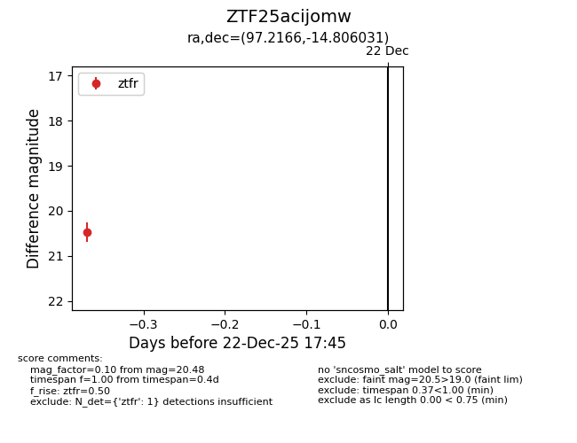
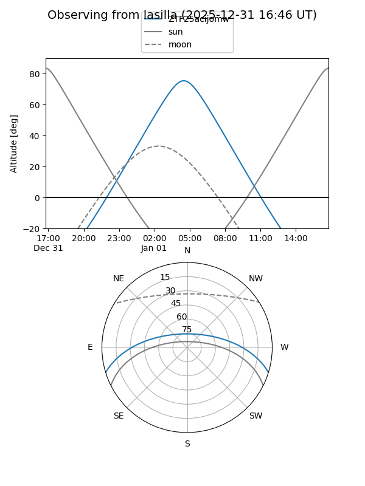
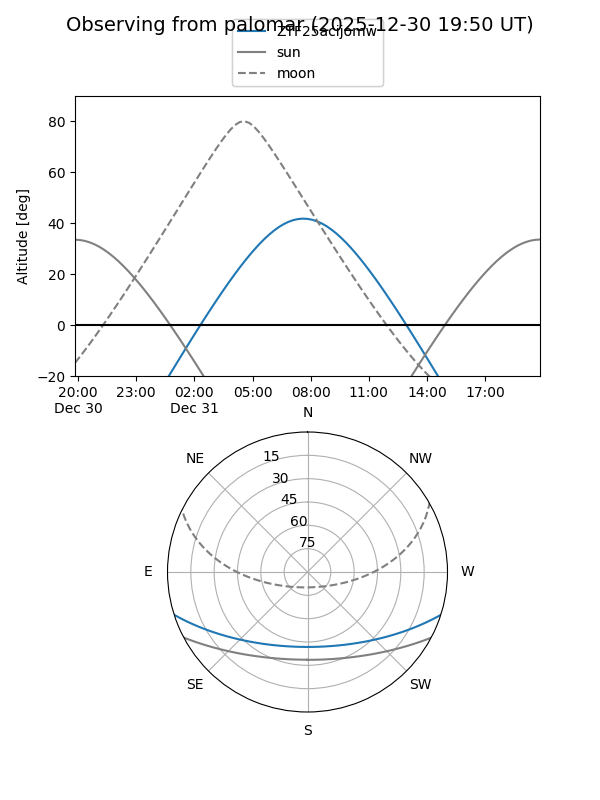
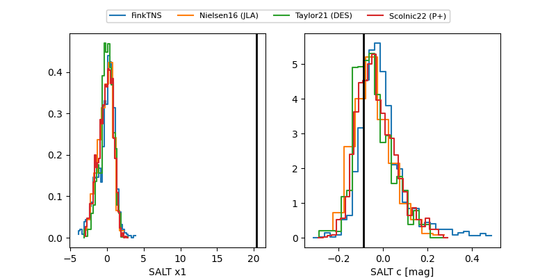

ZTF25acijomw
Target ZTF25acijomw at 2025-12-22 17:46
Aliases and brokers:
FINK: fink-portal.org/ZTF25acijomw
Lasair: lasair-ztf.lsst.ac.uk/objects/ZTF25acijomw
ALeRCE: alerce.online/object/ZTF25acijomw
alt names
ZTF25acijomw (ztf,fink_ztf)
Coordinates:
equatorial (ra, dec) = 97.2166,-14.80603
equatorial (HMS+DMS) = 06:28:51.98,-14:48:21.71
galactic (l, b) = (223.7638,-11.60309)
Flags:
Photometry:
last ztfr=20.48
1 ztfr detections
Lightcurve

Visibility


Additional plots
